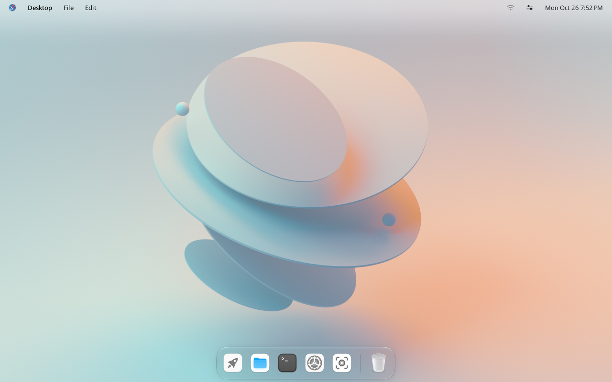
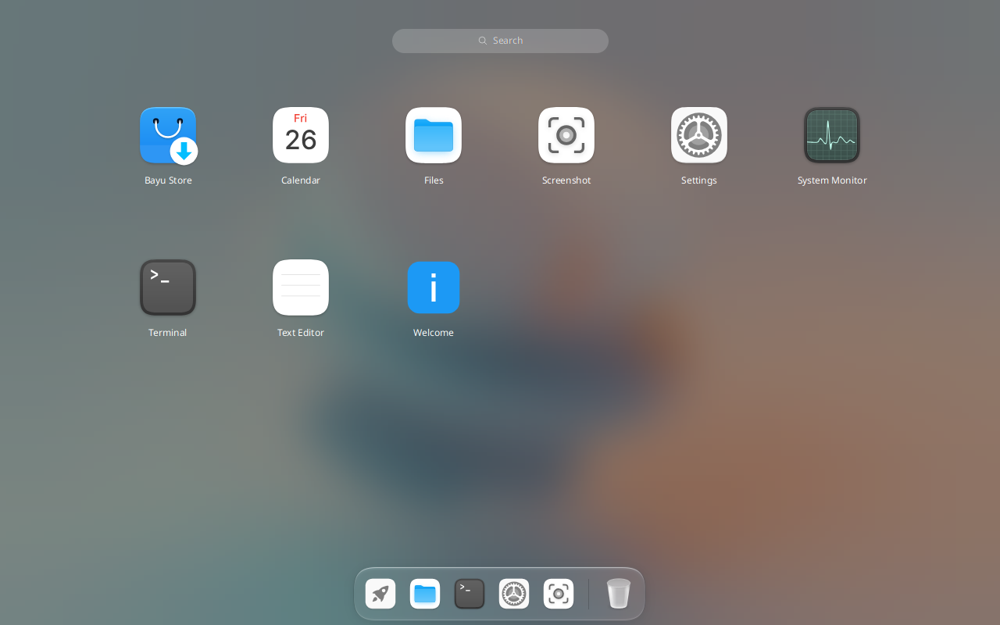
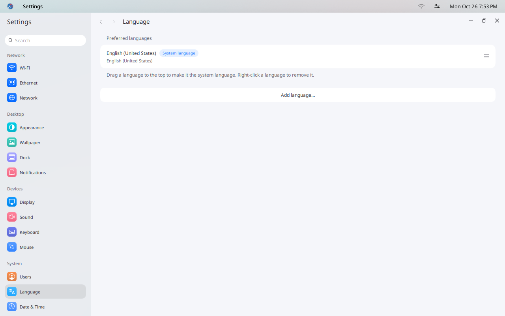
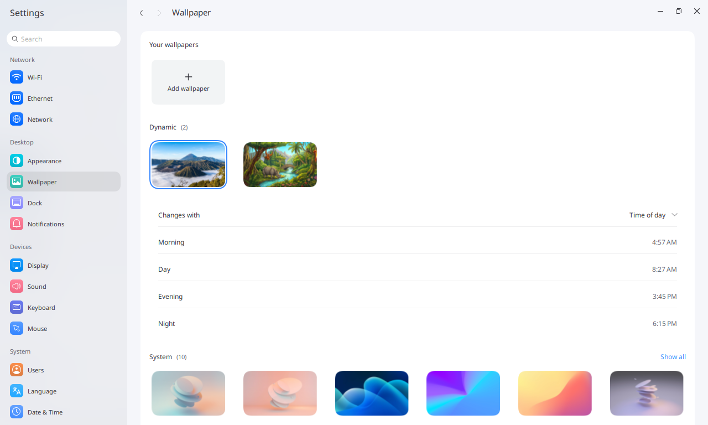

IGN 26 Docs
Use the desktop
Find your way around Bayu: the top bar, the dock, the launcher and Settings.


The top bar
On the left is the IGN logo, then the name of the app in front and that app's menus. Click the logo for Settings, Lock screen, Log out, Restart and Shutdown.
On the right are the network, Control Center and the clock. Control Center has quick switches for Wi-Fi, Dark Mode, Do Not Disturb, the camera and the microphone.
The dock
From left to right: Launcher, Files, Terminal, Settings, Screenshot and the Trash. An app you open gets its own icon until you close it. A dot under an icon means the app is open.
The launcher
Click the rocket icon to see every installed app. Click one to open it. Press Esc to close the launcher.


Dock or Panel
Bayu has two layouts. You can switch at any time, and the desktop changes at once.
| Layout | What you get |
|---|---|
| Dock | A top bar with the menus of the app in front, the clock and the status icons, and a dock at the bottom. This is the default. |
| Panel | One bar along the bottom with the start button, your open apps, the status icons and the clock. Each app shows its menus in its own window. Restart, Shutdown and Log out are in Control Center. |

In Settings, open Desktop.
Under Layout, click Dock or Panel.
The welcome tour that opens after you sign in for the first time also asks which layout you want.
Settings
Open Settings from the dock. Pages are grouped into Network, Desktop, Devices and System.
Change the language
In Settings, open Language.

Click Add language… and choose a language.
Drag it to the top of the list. The top language is the system language.
Click the logo in the top-left corner, choose Log out, and sign in again. Apps then use the new language.

Change the wallpaper
Open Wallpaper in Settings. Pictures under Dynamic change through the day. Pictures under System and Your wallpapers stay the same.


Under Dynamic, click the mountain or the forest. The mountain is the default.
Next to Changes with, choose Time of day or Theme.
| Changes with | What you see |
|---|---|
| Time of day | The Morning, Day, Evening and Night pictures, each from the time shown next to it. The times follow sunrise and sunset in your time zone. |
| Theme | The day picture in light mode, the night picture in dark mode. |
To use your own picture, click Add wallpaper. The login screen uses the same wallpaper as the desktop.
Next: install apps.